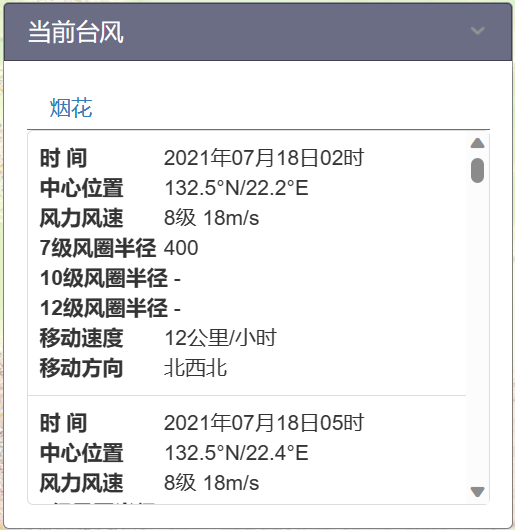
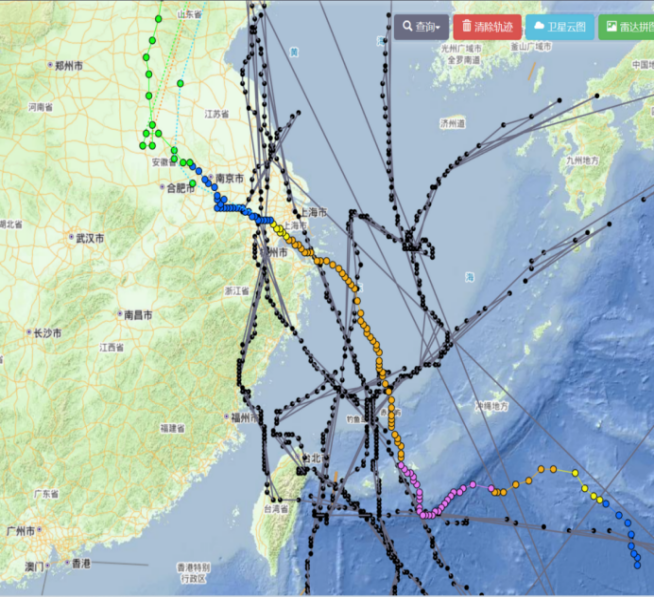

在此设置你的目标景点！
.png )
岳王庙
.png )
文澜阁
.png )
平湖秋月
.png )
云水光中
.png )
钱塘门
.png )
湖滨公园
在此设置你的目标景点！
岳王庙
文澜阁
平湖秋月
云水光中
钱塘门
湖滨公园
你已选的景点如下：
还没有已选择的景点
西湖十景:（点击查看具体信息）
苏堤春晓
曲院风荷
平湖秋月
断桥残雪
花港观鱼
柳浪闻莺
三潭印月
双峰插云
雷峰夕照
南屏晚钟
苏堤春晓：
苏堤春晓，南起南屏山麓，北到栖霞岭下，全长近3千米， 西距湖西岸约500米， 范围约9.66公顷。北宋元祐五年（1090年） ，北宋文人苏轼用疏浚西湖时挖出的湖泥堆筑了一条南北走向的长堤，堤上建有六桥，自南向北依次命名为映波桥、锁澜桥、望山桥、压堤桥、东浦桥和跨虹桥。后人为了纪念苏东坡治理西湖的功绩将她命名为苏堤。长堤卧波，连接了南山北山。南宋时，苏堤春晓被列为西湖十景之首，元代又称之为“六桥烟柳”而列入钱塘十景。苏堤是跨湖连通南北两岸的唯一通道，穿越了整个西湖水域，因此，在苏堤上具备较为完整的视域范围，是观赏全湖景观的较佳地带。苏堤自北宋始建，一直保持了沿堤两侧相间种植桃树和垂柳的植物景观特色。春季拂晓是欣赏“苏堤春晓”的较佳时间
曲院风荷：
曲院风荷，位于西湖西北角，素以湖景、荷景著称。据记载，宋代洪春桥畔有一处官家酿酒作坊，每逢夏日熏风吹拂，荷香与酒香四溢，令人陶醉，人们称之为“麯院荷风”。清代，酒坊关闭，康熙游湖时将“麯”字改成为“曲”，易“荷风”为“风荷”。曲院风荷景区经过大规模的拓建，成为占地420余亩以荷文化、酒文化为主题的大型园林。全园分为岳湖、竹素园、风荷、曲院、滨湖密林等5个景区。园内亭、台、楼、榭布局典雅，荷花池面约占38亩，种有红莲、白莲、重台莲、洒金莲、并蒂莲等珍稀名贵品种
平湖秋月：
平湖秋月，作为西湖十景之一，南宋时平湖秋月并无固定景址，这从当时以及元，明两朝文人赋咏此景的诗词多从泛归舟夜湖，舟中赏月的角度抒写不难看出，如南宋孙锐诗中有“月冷寒泉凝不流，棹歌何处泛舟”之句；明洪瞻祖在诗中写道：“秋舸人登绝浪皱，仙山楼阁镜中尘。”留传千古的明万历年间的西湖十景木刻版画中，《平湖秋月》一图也仍以游客在湖船中举头望月为画面主体。 平湖秋月观景点位于白堤西端，背倚孤山，面临外湖。唐代建有望湖亭，明代又增龙王祠，清康熙年间定名平湖秋月。每当清秋气爽。湖面平静如镜，皓洁的秋月当空，月光与湖水交相辉映，颇有“一色湖光万顷秋”之感，故在湖畔立碑，题名“平湖秋月”。 “平湖秋月”景观完整保留了清代皇家钦定西湖十景时 “一院一楼一碑一亭”的院落布局。
断桥残雪：
断桥残雪，位于白堤东端。据说，早在唐朝，断桥就已建成，时人张祜《题杭州孤山寺》诗中就有“断桥”一词。民国十年（1921年）断桥被重建，长8.8米，宽8.6米，单孔净跨6.1米。民国三十年1941年断桥改建，20世纪50年代又经修饰。桥畔有“云水光中”水榭和断桥残雪碑亭。 断桥残雪景观内涵说法不一，一般指冬日雪后，桥的阳面冰雪消融，但阴面仍有残雪似银，从高处眺望，桥似断非断。伫立桥头，放眼四望，远山近水，尽收眼底，是欣赏西湖雪景之佳地。断桥的闻名还因中国民间传说《白蛇传》，相传这里是白娘子和许仙的定情之桥。
花港观鱼：
花港观鱼、位于西湖西南角，东接苏堤，南北分别毗邻小南湖和西里湖，是一座占地20余公顷的大型公园，存有御碑、御碑亭、鱼池及假山等遗址。花家山麓有一小溪，流经此处注入西湖。因沿溪多栽花木，常有落英飘落溪中，故名“花港”。南宋时，内侍官卢允升曾在离这里不远的花家山下结庐建私家花园，园中花木扶疏，引水入池，蓄养五色鱼以供观赏怡情，渐成游人杂沓频频光顾之地，时称卢园又以地近花家山而名以花港。宫廷画师创作西湖十景组画时将它列入其中。清康熙三十八年（1699年），皇帝康熙驾临西湖，照例题书花港观鱼景目，用石建碑于鱼池畔。后来乾隆下江南游西湖时，又有诗作题刻于碑阴，诗中有句云：“花家山下流花港，花著鱼身鱼嘬花”
柳浪闻莺：
柳浪闻莺，位于西湖东南岸，清波门处，为占地17公顷的大型公园。南宋时为帝王御花园，称聚景园，清代恢复柳浪闻莺旧景。全园分友谊、闻莺、聚景、南园四个景区。柳丛衬托着紫楠、雪松、广玉兰及碧桃、海棠、月季等异木名花。是欣赏三面云山一面水的观景佳地。 柳浪闻莺内的柳型各具特色：柳丝飘动似贵妃醉酒，称“醉柳”；枝叶繁茂如狮头，称“狮柳”；远眺象少女浣纱，称“浣纱柳”等。有柳洲之名。其间黄莺飞舞，竞相啼鸣，故有“柳浪闻莺”之称。
三潭印月：
三潭印月，三潭印月岛与湖心亭、阮公墩鼎足而立合称“湖中三岛”，犹如中国古代传说中的蓬莱三岛，故又称小瀛洲。范围约7.67公顷，是杭州西湖较具标志性的景观。俯瞰整个小瀛洲犹如一个硕大的“田”字。小瀛洲上有开网亭、亭亭亭、九狮石、闲放台、迎翠轩、我心相印亭等园林建筑点缀其间。绿树掩映、花木扶疏。湖岸垂柳拂波，水面亭榭倒影；园林富于空间层次变化，造成“湖中湖”“岛中岛”“园中园”的境界。 岛南湖中建成有三座石塔，相传为苏东坡在杭疏浚西湖时所创设（现有石塔为明代重建）。塔腹中空，球面体上排列着五个等距离圆洞，若在月明之夜，洞口糊上薄纸，塔中点燃灯光，洞形印入湖面，呈现许多月亮，真月和假月其影确实难分，故得名“三潭印月”。 三潭印月景观以水中三塔、小瀛洲岛为核心观赏要素，以月夜里在岛上观赏月、塔、湖的相互映照、引发禅境思考和感悟为欣赏主题。 小瀛洲岛在明万历间（16世纪）浚湖堆土而成，呈“湖中有岛，岛中有湖”的“田”字形格局，是江南水上园林的经典。全岛以亭台楼阁配以传统花木构成色彩绚丽的景致，与岛内外水光云天相映，象征了中国古代神话中的蓬莱仙岛。
双峰插云：
双峰插云，双峰即南高峰、北高峰，分别位于西湖之西南、西北。两峰遥相对峙，绵延相距5千米。南高峰临近湖，峰高257米。北高峰海拔314米，是灵隐寺的坐山。 双峰插云本是湖中遥望之景，清初为了立碑才移到陆上去的。当群山云雾迷漫时，两峰时露双尖，宛如峰插云霄，峰势高峻磅礴，晴雨晨昏不同，尤在雨后或阴翳多云天气，彩云、白云或浓或淡，忽缠忽遮，是云是山，一片朦胧。 西湖南北高峰在唐宋时各有塔一座，在春、秋晴朗之日远望两峰，可见遥相对峙的双塔巍然耸立。每当云雾弥漫，塔尖于云中时隐时显。
雷峰夕照：
雷峰夕照，白娘子故事中的雷峰塔就位于西湖南岸夕照山上。宋吴越王钱弘俶因黄妃得子而建，为藏经之所。因塔址小山名雷峰，后人改称“雷峰塔”。每当夕阳西照，塔影横空，亭台金碧，故得“雷峰夕照”之名。至明嘉靖年间，塔外部楼廊被倭寇烧毁。塔基砖被迷信者盗窃，致使民国十三年（1924年）倒塌。 2000年12月26日，雷峰塔重建工程正式奠基。雷峰新塔建造在雷峰塔原址上。新塔通高71米，五面八层，依山临湖。为保护好地下珍贵遗址，对古塔遗址实行玻璃天棚覆盖，使古塔重生新塔，新塔彰显古塔，创下了中国古塔遗址原地保护的全国第一，雷峰夕照的美景又重返人间。
南屏晚钟：
南屏晚钟，是西湖十景中问世较早的景目。早在北宋末期，画家张择端就曾经画过《南屏晚钟图》。南屏山绵延横陈于西湖南岸，山高不过百米，山体延伸却长达千余米。山上怪石耸秀，绿树惬眼。晴好日，满山岚翠在蓝天白云得衬托下秀色可餐，遇雨雾天，云烟遮遮掩掩，山峦好像翩然起舞，飘渺空灵，若即若离。后周显得元年（954年），吴越国主钱弘叔在南屏山麓建寺院，后来成为与灵隐寺并峙于南北的西湖两大佛教道场之一的净慈寺。 净慈寺寺内有宗镜堂、慧日阁、济祖殿、运木井等古迹，山门前有放生池。1986年重建，为歇山顶三重檐两层建筑，上层悬大梵钟，下层为净慈寺地藏殿。大梵钟高3米，口径2.3米，重10余吨。净慈寺晚钟鸣响，回声在山间、林樾悠扬飘荡。 南屏晚钟景观属佛教文化古迹，以听觉欣赏为特征。南屏山麓自五代（10世纪）以来就有“东南佛国”的佛教胜地。每当佛寺晚钟敲响，钟声振荡频率传到山上的岩石、洞穴，随之形成悠扬共振齐鸣的钟声。已成为杭城除夕夜迎新辞旧的撞钟活动场所
近期事件：
台风影响
今年第5号台风“杜苏芮”今日8时位于距离台湾省鹅銮鼻偏南方向约350公里的洋面上，最大风力17级（58米/秒，超强台风级）。预计将以每小时10-15公里的速度向西北方向移动，将于今天夜间至明天早晨进入南海东北部海面，并将于后天早晨至上午在福建中部至广东东部一带沿海登陆。受台风影响，26-28日东海中南部海域逐渐增强到10~12级，沿海及浙南地区局部大暴雨。
 